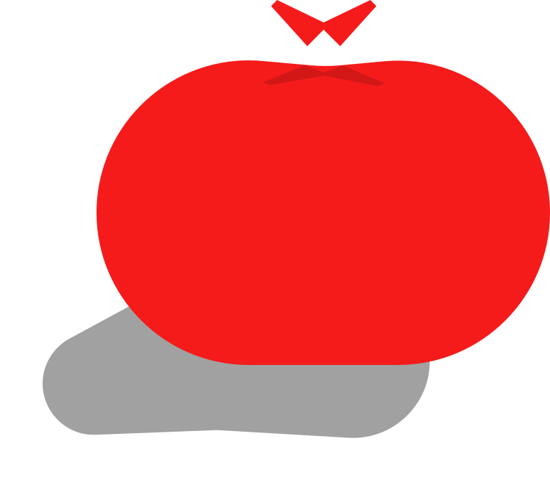

25:00

Настройки
Настройте время таймера-помодоро, а также короткого или длинного перерыва
Таймер
Короткий перерыв
Длинный перерыв
Упс :(
На данном этапе разработки вы не можете добавить задачи для вашего таймера. Но мы уже работаем над этим!